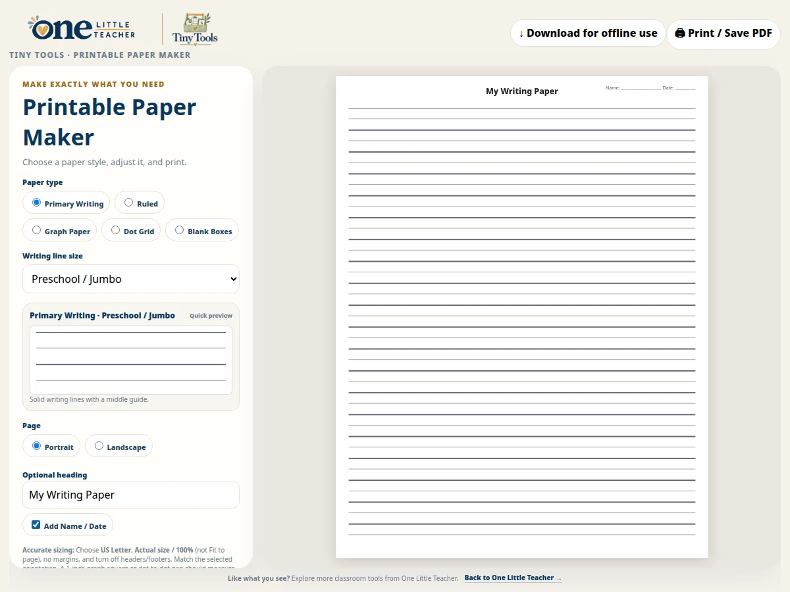

Learning
Printable Paper Maker
Create primary writing, ruled, graph, dot-grid or blank-box paper.
Free · Offline-friendly
Ways to use it
- Prepare paper layouts for writing, drawing and math activities.
How to use it
- Choose a paper type and adjust its layout.
- Choose orientation and an optional heading or Name / Date.
- Select Print / Save PDF.
Practical details
Use US Letter and Actual size / 100%, with no margins or headers and footers. Measure a printed grid before using it for precise work.
Explore together
Choose the setup that fits your lesson or classroom routine.